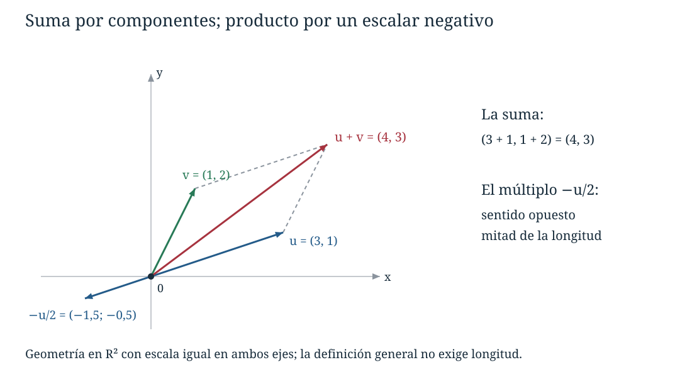
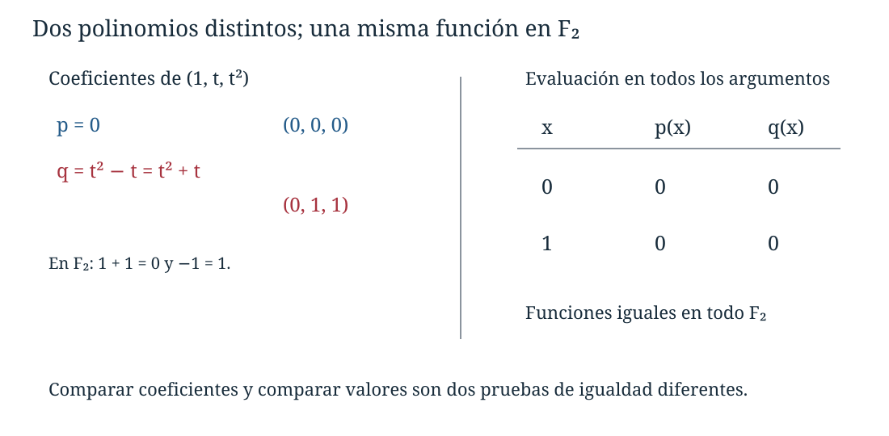
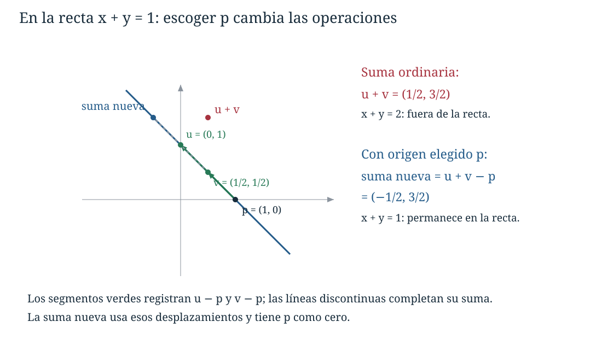

Capítulo 4. Espacios vectoriales
Álgebra para matemáticos · Tomo II
← Capítulo 3 · Índice del tomo II · Obra completa · Capítulo 5 →
Buscamos un polinomio de grado a lo sumo dos que tome los valores \(1\), \(2\) y \(5\) en \(0\), \(1\) y \(2\), respectivamente. Si escribimos \(p(t)=a+bt+ct^2\), esas condiciones se convierten en
\[ a=1,\qquad a+b+c=2,\qquad a+2b+4c=5. \]
La eliminación da \(a=1\), \(b=0\) y \(c=1\): el polinomio buscado es \(1+t^2\). Hemos resuelto un problema sobre polinomios mediante un sistema sobre sus coeficientes. La relación va más allá de esa cuenta. Si sumamos dos polinomios, se suman sus listas de coeficientes; si multiplicamos un polinomio por un número, ese número multiplica cada coeficiente. Por eso una expresión como \(2p-3q\) puede calcularse con polinomios o con columnas y produce resultados compatibles.
Las matrices del capítulo anterior permiten la misma clase de operaciones, aunque sus elementos no sean polinomios. También podemos sumar funciones y multiplicarlas por números: en cada argumento, sumamos o multiplicamos sus valores. Hay una estructura común que permite reunir objetos tan distintos y explicar de una sola vez las reglas que gobiernan esos cálculos. Para reconocerla necesitamos precisar las operaciones admitidas y las leyes que conservan.
4.1. Las leyes que permiten calcular
En \(\mathbb R^2\) sumamos pares y multiplicamos por reales mediante las reglas \((x,y)+(r,s)=(x+r,y+s)\) y \(a(x,y)=(ax,ay)\). La suma admite reordenamiento y agrupación; cada par tiene un opuesto, y multiplicar por un escalar se distribuye sobre una suma. Esas propiedades se demuestran aplicando las leyes de los números a cada componente, y por ello siguen siendo reconocibles en objetos que no dibujamos como flechas.
La figura siguiente representa esas operaciones en un caso concreto. El segmento que se traslada para completar el paralelogramo conserva su desplazamiento. El punto final de la suma queda determinado por las dos sumas de componentes; el dibujo permite ver la misma operación que ya sabemos calcular.

El cuerpo de escalares se denotará por \(\mathbb F\). Recordemos qué información utilizaremos de él: la suma y el producto de escalares son conmutativos y asociativos, el producto se distribuye sobre la suma, existen neutros \(0_{\mathbb F}\) para la suma y \(1_{\mathbb F}\) para el producto, distintos entre sí, cada escalar tiene opuesto y cada escalar no nulo tiene inverso multiplicativo. Los ejemplos principales son \(\mathbb Q\), \(\mathbb R\) y \(\mathbb C\); también usaremos \(\mathbb F_2\), el cuerpo de residuos módulo dos. En este último \(1+1=0\), por lo que una cuenta válida sobre los reales puede cambiar si contiene una división por dos.
Definición 4.1 (espacio vectorial). Un espacio vectorial sobre \(\mathbb F\) consta de un conjunto \(V\), una operación de suma \(V\times V\to V\), escrita \((u,v)\mapsto u+v\), y una multiplicación por escalares \(\mathbb F\times V\to V\), escrita \((a,v)\mapsto av\), que satisfacen las siguientes leyes para todos \(u,v,w\in V\) y todos \(a,b\in\mathbb F\):
- \(u+v=v+u\).
- \((u+v)+w=u+(v+w)\).
- Existe \(0_V\in V\) tal que \(v+0_V=v\) para todo \(v\in V\).
- Para cada \(v\in V\) existe \(w\in V\) tal que \(v+w=0_V\).
- \(1_{\mathbb F}v=v\).
- \(a(bv)=(ab)v\).
- \(a(u+v)=au+av\).
- \((a+b)v=av+bv\).
Los elementos de \(V\) se llaman vectores y los de \(\mathbb F\), escalares. La expresión «espacio vectorial» incluye la elección del cuerpo y de las dos operaciones.
Las funciones que figuran antes de los axiomas ya exigen que las operaciones estén definidas para todas las entradas indicadas y que sus resultados pertenezcan a \(V\). Esta exigencia se denomina cierre. Algunos textos la cuentan como dos axiomas adicionales. El contenido es el mismo: antes de preguntar si una suma es asociativa tenemos que poder efectuarla dentro del conjunto.
La tercera ley exige un solo elemento que funcione para todos los vectores. La cuarta permite que el opuesto dependa de \(v\). Ambas contienen afirmaciones de existencia; las restantes son identidades universales. Esta diferencia explica por qué el conjunto vacío no puede ser un espacio vectorial: no contiene el elemento cuya existencia exige la tercera ley.
Hay dos distributividades porque hay dos clases de suma. En \(a(u+v)\) se suman vectores; en \((a+b)v\) se suman escalares. Del mismo modo, \(a(bv)=(ab)v\) expresa compatibilidad entre el producto del cuerpo y su acción sobre los vectores. La definición no introduce un producto \(uv\) de dos vectores. Las matrices cuadradas admiten un producto adicional, estudiado en C03, pero la estructura vectorial de sus sumas y múltiplos existe sin usarlo.
Cuando el contexto lo permita escribiremos \(0\) tanto para \(0_{\mathbb F}\) como para \(0_V\). Mantendremos los subíndices mientras la distinción ayude a comprender una prueba: un cero es un escalar que multiplica; el otro es un vector que se suma.
4.2. Qué podemos deducir de los axiomas
La definición exige que exista un cero y que cada vector tenga un opuesto, pero todavía no afirma su unicidad. Necesitamos esa unicidad para que los símbolos \(0_V\) y \(-v\) designen elementos determinados. La prueba puede realizarse mediante sumas y agrupaciones, sin conocer de qué están hechos los vectores.
Proposición 4.1 (unicidad y cancelación). El vector cero es único, cada vector tiene un único opuesto y la suma admite cancelación: si \(u+w=v+w\), entonces \(u=v\).
Demostración. Si \(e\) y \(f\) son elementos neutros para la suma, entonces \(e=e+f=f\): la primera igualdad usa que \(f\) es neutro y la segunda, que \(e\) lo es, junto con la conmutatividad. Para probar cancelación, tomemos un opuesto \(z\) de \(w\), cuya existencia garantiza el cuarto axioma. Sumarlo a ambos miembros da
\[ (u+w)+z=(v+w)+z, \qquad u+(w+z)=v+(w+z), \qquad u=v. \]
Si \(x\) e \(y\) son dos opuestos de \(w\), tenemos \(w+x=w+y=0_V\); la cancelación, con reordenamiento de sumandos, da \(x=y\). Podemos por tanto escribir \(-w\) sin depender de una elección. \(\square\)
Definimos \(u-v=u+(-v)\). El signo menos representa la operación que acabamos de justificar. En un espacio de funciones producirá la función opuesta; en uno de matrices, la matriz opuesta. La notación puede ser uniforme porque la propiedad que la determina es única.
Proposición 4.2 (ceros y signos). Para todo \(v\in V\) y \(a\in\mathbb F\),
\[ 0_{\mathbb F}v=0_V,\qquad a0_V=0_V,\qquad (-1_{\mathbb F})v=-v,\qquad (-a)v=-(av)=a(-v). \]
Demostración. La primera distributividad pertinente es la que separa una suma de escalares:
\[ 0_{\mathbb F}v=(0_{\mathbb F}+0_{\mathbb F})v =0_{\mathbb F}v+0_{\mathbb F}v. \]
El miembro izquierdo también es \(0_{\mathbb F}v+0_V\). Cancelar \(0_{\mathbb F}v\) permite concluir que \(0_{\mathbb F}v=0_V\). Para la segunda identidad usamos la otra distributividad: \(a0_V=a(0_V+0_V)=a0_V+a0_V\); la misma cancelación da \(a0_V=0_V\).
Para identificar el opuesto de \(v\) buscamos un vector que, sumado a él, produzca el cero. Las leyes de escalares proporcionan exactamente ese vector:
\[ v+(-1_{\mathbb F})v =(1_{\mathbb F}+(-1_{\mathbb F}))v =0_{\mathbb F}v=0_V. \]
La unicidad del opuesto demuestra \((-1_{\mathbb F})v=-v\). Finalmente, \(av+(-a)v=(a-a)v=0_V\), de modo que \((-a)v=-(av)\); además \(a(-v)=a((-1_{\mathbb F})v)=(-a)v\) por compatibilidad del producto escalar. \(\square\)
Estas demostraciones aclaran por qué no hizo falta incluir \(0v=0\) entre los axiomas. También muestran dónde intervienen las dos distributividades. Reconocer esa dependencia será útil al examinar operaciones que se parecen a las ordinarias pero incumplen alguna ley.
Proposición 4.3 (anulación y cancelación escalar). Si \(av=0_V\), entonces \(a=0_{\mathbb F}\) o \(v=0_V\). En consecuencia, si \(a\ne0_{\mathbb F}\) y \(au=av\), entonces \(u=v\); si \(v\ne0_V\) y \(av=bv\), entonces \(a=b\).
Demostración. Si \(a\ne0_{\mathbb F}\), podemos aplicar su inverso:
\[ v=1_{\mathbb F}v=(a^{-1}a)v =a^{-1}(av)=a^{-1}0_V=0_V. \]
Si \(au=av\), las distributividades y la proposición anterior dan \(a(u-v)=0_V\); al ser \(a\) no nulo resulta \(u-v=0_V\), y sumar \(v\) da \(u=v\). Si \(av=bv\), obtenemos \((a-b)v=0_V\); como \(v\ne0_V\), debe ser \(a-b=0_{\mathbb F}\). \(\square\)
Aquí se cancela un escalar no nulo mediante su inverso en el cuerpo. No hemos definido inversos de vectores ni dividido por ellos. En particular, la igualdad \(av=bv\) con \(v=0_V\) no proporciona ninguna información sobre \(a\) y \(b\).
La asociatividad permite escribir sumas finitas sin decidir dónde poner los paréntesis, y la conmutatividad permite reordenarlas. Por inducción a partir de las dos distributividades,
\[ a\left(\sum_{j=1}^r v_j\right)=\sum_{j=1}^r av_j, \qquad \left(\sum_{j=1}^r a_j\right)v=\sum_{j=1}^r a_jv. \]
Para \(r=0\) adoptamos la suma vacía \(0_V\) o \(0_{\mathbb F}\), según corresponda; las identidades siguen siendo válidas por la proposición 4.2. Una combinación lineal finita es una expresión \(a_1v_1+\cdots+a_rv_r\). Hemos usado combinaciones de filas desde C01; el nombre describe la misma operación en cualquier espacio vectorial. Una sucesión infinita de vectores, por sí sola, no tiene una suma definida por estos axiomas.
4.3. Columnas, matrices y productos de espacios
Para \(n\ge1\), el conjunto \(\mathbb F^n\) de las listas \((x_1,\ldots,x_n)\) es un espacio vectorial sobre \(\mathbb F\) con operaciones componente a componente. Los resultados permanecen en \(\mathbb F^n\) porque cada suma y cada producto de escalares pertenece a \(\mathbb F\). En la posición \(j\), la conmutatividad y la asociatividad de la suma son las del cuerpo; el neutro es \((0,\ldots,0)\) y el opuesto de \((x_1,\ldots,x_n)\) es \((-x_1,\ldots,-x_n)\). Las otras cuatro leyes se verifican en esa posición mediante
\[ 1x_j=x_j,\quad a(bx_j)=(ab)x_j,\quad a(x_j+y_j)=ax_j+ay_j,\quad (a+b)x_j=ax_j+bx_j. \]
Como dos listas son iguales cuando coinciden todas sus componentes, estas identidades prueban los axiomas para las listas completas. Escribirlas como columnas conserva las convenciones de C02–C03; escribir una tupla en una línea no cambia sus operaciones. Para \(n=0\), \(\mathbb F^0\) contiene una sola tupla, la vacía, que es su vector cero. También admitiremos matrices con cero filas o cero columnas: sus productos se calculan con las mismas reglas y las sumas sobre índices vacíos valen cero. La identidad \(I_0\) es la matriz vacía de orden cero. Estas convenciones permiten representar aplicaciones desde el espacio nulo o hacia él.
En \(M_{m,n}(\mathbb F)\), con tamaños \(m,n\ge1\) fijos, se procede por entradas: \((A+B)_{ij}=A_{ij}+B_{ij}\) y \((aA)_{ij}=aA_{ij}\). El cierre depende de que todas las matrices tengan el mismo tamaño. El neutro es la matriz nula y el opuesto cambia el signo de cada entrada. Las ocho leyes quedan verificadas por las mismas identidades del cuerpo para cada \((i,j)\). El producto \(AB\) no interviene; incluso cuando \(m\ne n\), \(M_{m,n}(\mathbb F)\) es un espacio vectorial.
Si \(U\) y \(W\) son espacios vectoriales sobre el mismo cuerpo, podemos llevar simultáneamente un dato de cada uno. En el producto cartesiano \(U\times W\) definimos
\[ (u,w)+(u',w')=(u+u',w+w'),\qquad a(u,w)=(au,aw). \]
Proposición 4.4 (producto de dos espacios). Estas operaciones hacen de \(U\times W\) un espacio vectorial sobre \(\mathbb F\), con cero \((0_U,0_W)\) y opuesto \((-u,-w)\).
Demostración. Las operaciones son internas porque cada componente permanece en su espacio. La conmutatividad y asociatividad se comprueban en cada componente usando las de \(U\) y \(W\). El par indicado se suma sin cambiar ninguna componente, y sumar el opuesto indicado produce ese par cero. Asimismo, \(1(u,w)=(u,w)\) y
\[ a(b(u,w))=(a(bu),a(bw))=((ab)u,(ab)w)=(ab)(u,w). \]
Las dos distributividades se verifican distribuyendo en ambas componentes; por ejemplo, \(a((u,w)+(u',w'))=(au+au',aw+aw')=a(u,w)+a(u',w')\). Para una suma de escalares se obtiene del mismo modo \((a+b)(u,w)=(au+bu,aw+bw)=a(u,w)+b(u,w)\). Quedan probados todos los axiomas. \(\square\)
Por ejemplo, un par formado por una matriz y un polinomio puede ser un vector cuando ambos objetos admiten escalares del mismo cuerpo. No necesitamos convertirlos en un único objeto geométrico.
Existe también un espacio con un solo elemento. Si \(V=\{\omega\}\) y definimos \(\omega+\omega=\omega\) y \(a\omega=\omega\) para todo \(a\in\mathbb F\), todas las expresiones de los axiomas valen \(\omega\). Su cero es \(\omega\). Se llama espacio cero; en la notación usual se escribe \(\{0\}\). La lista vacía es otra realización de este caso: \(\mathbb F^0\) contiene una única lista, no es el conjunto vacío.
4.4. Las funciones como vectores
Sea \(X\) un conjunto fijo y denotemos por \(\mathbb F^X\) el conjunto de todas las funciones \(f:X\to\mathbb F\). Una función tiene muchos valores, posiblemente infinitos, pero la regla para sumar dos funciones no requiere sumar infinitos números. Define un solo valor a la vez:
\[ (f+g)(x)=f(x)+g(x),\qquad (af)(x)=a f(x) \quad\text{para cada }x\in X. \]
Proposición 4.5 (espacio de funciones). Con estas operaciones \(\mathbb F^X\) es un espacio vectorial sobre \(\mathbb F\). Su cero es la función de valor constantemente nulo y el opuesto de \(f\) está dado por \((-f)(x)=-f(x)\).
Demostración. Las reglas asignan a cada \(x\in X\) un valor de \(\mathbb F\), por lo que producen funciones del mismo dominio y codominio. Para verificar una igualdad de funciones debemos comprobarla en cada argumento. Así,
\[ \begin{aligned} (f+g)(x)&=f(x)+g(x)=g(x)+f(x)=(g+f)(x),\\ ((f+g)+h)(x)&=(f(x)+g(x))+h(x) =f(x)+(g(x)+h(x))=(f+(g+h))(x). \end{aligned} \]
La función nula cumple \((f+0)(x)=f(x)\), y la función indicada como opuesto cumple \((f+(-f))(x)=0\). Para las leyes que involucran escalares, las evaluaciones dan
\[ \begin{aligned} (1f)(x)&=f(x),\\ (a(bf))(x)&=a(bf(x))=(ab)f(x)=((ab)f)(x),\\ (a(f+g))(x)&=a(f(x)+g(x))=af(x)+ag(x)=(af+ag)(x),\\ ((a+b)f)(x)&=(a+b)f(x)=af(x)+bf(x)=((af)+(bf))(x). \end{aligned} \]
Todas las igualdades valen para cada \(x\in X\) y por ello son igualdades entre funciones. Si \(X=\varnothing\), existe exactamente una función de \(X\) a \(\mathbb F\), la función vacía. Las operaciones sólo pueden devolver esa función, de modo que se obtiene el espacio cero. \(\square\)
Cuando \(X=\{1,\ldots,n\}\), registrar una función equivale a registrar la lista de sus \(n\) valores. Para una matriz, el conjunto de argumentos puede ser el de pares de índices \((i,j)\). Estas descripciones explican por qué las pruebas por componentes y por entradas se parecían tanto: ambas verificaban una igualdad de funciones en todos sus argumentos.
En cambio, una función de dominio infinito no suele quedar determinada por una lista finita de muestras. Si \(f(t)=t\) y \(g(t)=t+t(t-1)\) en \(\mathbb R\), ambas coinciden en \(0\) y \(1\), pero \(f(2)=2\) y \(g(2)=4\). Son vectores distintos de \(\mathbb R^{\mathbb R}\). Para identificar funciones necesitamos conocer una regla que garantice igualdad en todo el dominio.
Una sucesión \((a_0,a_1,a_2,\ldots)\) es una función de \(\mathbb N_0=\{0,1,2,\ldots\}\) a \(\mathbb F\). Las sucesiones forman, por tanto, otro espacio vectorial con operaciones término a término. Por ejemplo, la suma de \((1,1,1,\ldots)\) y \((0,1,2,\ldots)\) es \((1,2,3,\ldots)\). Se están efectuando infinitas operaciones separadas, una en cada posición, sin tomar el límite de ninguna suma. Las sucesiones que tienen sólo un número finito de términos no nulos también forman un espacio: la suma sólo puede ser no nula en la unión de los dos conjuntos finitos de posiciones, el múltiplo escalar no crea posiciones nuevas, el cero tiene todas sus entradas nulas y los opuestos conservan esas posiciones. Las identidades ya verificadas término a término siguen siendo válidas para esas sucesiones.
4.5. Polinomios y funciones polinómicas
En la apertura trabajamos con polinomios de grado a lo sumo dos. Denotaremos ese conjunto por \(\mathbb F[t]_{\le2}\); de manera general \(\mathbb F[t]_{\le n}\) consiste en los polinomios de grado a lo sumo \(n\), incluido el polinomio cero. Usaremos \(\mathbb F[t]\) para todos los polinomios con coeficientes en \(\mathbb F\).
Un polinomio formal se especifica por sus coeficientes, de los cuales sólo finitos son no nulos. Podemos escribir \(p=a_0+a_1t+\cdots+a_rt^r\) y añadir coeficientes nulos al final sin cambiarlo. Dos polinomios son iguales si coinciden sus coeficientes de cada potencia. La letra \(t\) sirve para registrar la posición de cada coeficiente; al evaluar después en un escalar obtendremos un valor del cuerpo.
Proposición 4.6 (espacios de polinomios). Con la suma de coeficientes y la multiplicación de todos los coeficientes por un escalar, \(\mathbb F[t]\) y \(\mathbb F[t]_{\le n}\), para \(n\ge0\), son espacios vectoriales sobre \(\mathbb F\).
Demostración. Cada polinomio se representa por su sucesión de coeficientes, prolongada con ceros. Sumar dos de esas sucesiones o multiplicar una por un escalar produce otra con sólo finitos términos no nulos, como se acaba de comprobar. Esto prueba el cierre en \(\mathbb F[t]\). Las leyes de conmutatividad, asociatividad, las dos distributividades, la compatibilidad escalar y la acción del uno son las correspondientes leyes del cuerpo en cada coeficiente. El cero tiene todos los coeficientes nulos y el opuesto cambia todos sus signos.
Si ambos polinomios tienen coeficientes nulos en posiciones superiores a \(n\), su suma y sus múltiplos siguen teniendo esos coeficientes nulos. El cero y los opuestos también permanecen en \(\mathbb F[t]_{\le n}\). Por tanto las mismas verificaciones prueban los ocho axiomas para ese conjunto. \(\square\)
El grado exacto no se conserva bajo suma. Sobre \(\mathbb R\), \(t^2+(1-t^2)=1\); además, multiplicar cualquier polinomio por cero produce el polinomio cero. Por eso «grado a lo sumo \(n\)» da un espacio y «grado exactamente \(n\)» no lo da. No necesitamos asignar un grado numérico al polinomio cero: en la notación \(\mathbb F[t]_{\le n}\) su inclusión se declara expresamente.
Por ejemplo, en \(\mathbb R[t]_{\le2}\), si \(p=1+2t-t^2\) y \(q=-2+t+3t^2\), entonces \(2p-q=4+3t-5t^2\). La lista \((4,3,-5)\) registra el mismo cálculo. El paso entre listas y polinomios funciona porque conocemos qué significa cada posición; la lista no sustituye la regla de evaluación ni el significado del objeto que representa.
Cada \(p\in\mathbb F[t]\) determina una función \(\widehat p:\mathbb F\to\mathbb F\) por evaluación. La sustitución respeta sumas y múltiplos: \(\widehat{p+q}(x)=\widehat p(x)+\widehat q(x)\) y \(\widehat{ap}(x)=a\widehat p(x)\). Sin embargo, dos polinomios distintos pueden dar la misma función. En \(\mathbb F_2\), el polinomio \(t^2-t\) no es cero: su coeficiente de \(t^2\) es \(1\). Su función vale cero en los dos argumentos del cuerpo, pues \(0^2-0=0\) y \(1^2-1=0\).

La distinción afecta al significado de una igualdad. Para polinomios formales se comparan coeficientes; para funciones se comparan todos los valores. Sobre un cuerpo infinito ambas comparaciones coinciden para polinomios: si las funciones de \(p\) y \(q\) son iguales, \(p-q\) tiene todos los elementos del cuerpo como raíces; un polinomio no nulo de grado \(d\) tiene a lo sumo \(d\) raíces y por eso debe ser el polinomio cero. El límite de raíces se obtiene del teorema del factor: si \(c\) es una raíz, escribimos \(p(t)=(t-c)q(t)\). Para otra raíz \(d\ne c\), la igualdad \(0=(d-c)q(d)\) obliga a \(q(d)=0\), porque \(d-c\) es un escalar no nulo. El grado de \(q\) es uno menos que el de \(p\), y la inducción limita a ese grado el número de raíces restantes. Para grado cero, un polinomio constante no nulo no tiene raíces. El argumento usa la división por un polinomio mónico, válida sobre cualquier cuerpo. Así recuperamos la identificación habitual sobre \(\mathbb Q\), \(\mathbb R\) y \(\mathbb C\), conservando una definición que también funciona en cuerpos finitos.
4.6. La elección de los escalares
El conjunto \(\mathbb C\) admite dos estructuras que ya podemos reconocer. Sobre \(\mathbb C\), los vectores son números complejos y un escalar complejo actúa mediante el producto ordinario. Sobre \(\mathbb R\), los vectores siguen siendo los mismos números complejos, pero sólo permitimos escalares reales. Las leyes se satisfacen en ambos casos porque son restricciones de las leyes del cuerpo complejo.
La diferencia aparece en una pregunta elemental. Con un escalar complejo podemos obtener \(i\) a partir de \(1\): basta multiplicar por \(i\). Con un escalar real eso es imposible. Para construir un complejo cualquiera mediante escalares reales usamos dos objetos, \(1\) e \(i\), y la expresión \(z=x\cdot1+y\cdot i\), con \(x,y\in\mathbb R\), es única por la definición de parte real e imaginaria. Con escalares complejos basta escribir \(z=z\cdot1\). Más adelante, las nociones de base y dimensión permitirán expresar con precisión esta diferencia; aquí ya podemos ver qué elección la origina.
Proposición 4.7 (restricción de escalares). Sea \(\mathbb K\) un subcuerpo de \(\mathbb F\), es decir, un subconjunto que es cuerpo con las mismas operaciones y el mismo uno. Todo espacio vectorial \(V\) sobre \(\mathbb F\) es también un espacio vectorial sobre \(\mathbb K\) si se mantiene la suma y se permiten sólo los escalares de \(\mathbb K\).
Demostración. La suma, el cero y los opuestos no cambian; por tanto se conservan las primeras cuatro leyes. Si \(a\in\mathbb K\) y \(v\in V\), el vector \(av\) está definido porque \(a\) también pertenece a \(\mathbb F\). Las cuatro identidades escalares ya valían para todos los escalares de \(\mathbb F\), así que valen para los de \(\mathbb K\). El uno actúa como identidad porque es el mismo elemento en los dos cuerpos. \(\square\)
La restricción permite pasar de \(\mathbb C\) a \(\mathbb R\) y de \(\mathbb R\) a \(\mathbb Q\). No autoriza el paso contrario conservando sin más el conjunto y el producto ordinario. Por ejemplo, \(\mathbb R\) no es un espacio sobre \(\mathbb C\) con ese producto: multiplicar \(1\in\mathbb R\) por \(i\) sale de \(\mathbb R\). El fallo ocurre antes de verificar las identidades, en la definición de la operación.
El cuerpo también determina qué divisiones son posibles. En cualquier espacio sobre \(\mathbb R\) o \(\mathbb C\), la ecuación \(2v=w\) tiene solución única \(v=\frac12w\). Sobre \(\mathbb F_2\), la expresión \(2v=(1+1)v\) es siempre \(0_V\). Por tanto tiene todos los vectores como soluciones si \(w=0_V\) y ninguna si \(w\ne0_V\). La cancelación escalar de la proposición 4.3 sigue siendo válida: en el segundo caso el escalar que parecía ser dos es precisamente cero.
4.7. Cambiar el origen y cambiar las operaciones
La recta \(x+y=1\) en \(\mathbb R^2\) no contiene el cero ordinario. Además, si \(u=(1,0)\) y \(v=(0,1)\), ambos pertenecen a la recta y \(u+v=(1,1)\) no pertenece. Con las operaciones heredadas del plano no es un espacio vectorial.
Podemos, sin embargo, elegir un punto \(p\) de esa recta y trabajar con desplazamientos desde él. Para no atribuir a la suma ordinaria propiedades que no tiene en la recta, escribimos operaciones nuevas:
\[ u\oplus v=u+v-p,\qquad a\odot u=p+a(u-p). \]
Si \(u\) y \(v\) satisfacen \(x+y=1\), la suma de las componentes de \(u\oplus v\) es \(1+1-1=1\). En \(a\odot u\) es \(1+a(1-1)=1\). Las operaciones permanecen en la recta; el punto \(p\) tendrá el papel de cero.
Proposición 4.8 (operaciones con un origen elegido). Sea \(V\) un espacio vectorial sobre \(\mathbb F\) y sea \(p\in V\) fijo. En el mismo conjunto \(V\), las operaciones \(u\oplus v=u+v-p\) y \(a\odot u=p+a(u-p)\) definen un espacio vectorial. Su cero es \(p\) y el opuesto de \(u\) para \(\oplus\) es \(2p-u\), donde \(2p=p+p\).
Demostración. La operación \(\phi(u)=u-p\) es una biyección del conjunto \(V\) consigo mismo: su inversa suma \(p\). Por cálculo directo,
\[ \phi(u\oplus v)=\phi(u)+\phi(v),\qquad \phi(a\odot u)=a\phi(u). \]
Podemos comprobar cada ley después de aplicar \(\phi\), porque su inyectividad permite recuperar la igualdad original. Por ejemplo, las imágenes de \((u\oplus v)\oplus w\) y \(u\oplus(v\oplus w)\) son \((\phi(u)+\phi(v))+\phi(w)\) y \(\phi(u)+(\phi(v)+\phi(w))\), que coinciden. Lo mismo prueba la conmutatividad. Como \(\phi(p)=0_V\), tenemos \(u\oplus p=u\); y \(\phi(2p-u)=-(u-p)\) prueba la fórmula del opuesto.
Las imágenes de \(1\odot u\) y \(u\) coinciden. Las de \(a\odot(b\odot u)\) y \((ab)\odot u\) son \(a(b\phi(u))\) y \((ab)\phi(u)\). Las de \(a\odot(u\oplus v)\) y \((a\odot u)\oplus(a\odot v)\) son \(a(\phi(u)+\phi(v))\) y \(a\phi(u)+a\phi(v)\). Por último, las de \((a+b)\odot u\) y \((a\odot u)\oplus(b\odot u)\) son \((a+b)\phi(u)\) y \(a\phi(u)+b\phi(u)\). Las leyes originales de \(V\) dan las igualdades requeridas; el cierre es inmediato de las fórmulas. \(\square\)
Para la recta anterior, el mismo argumento usa \(\phi(u)=u-p\) como biyección hacia la recta \(x+y=0\). Esta última sí conserva suma y múltiplos ordinarios: la suma de componentes permanece nula, contiene el cero y los opuestos, y las identidades se verifican componente a componente. Por ello las operaciones nuevas hacen de \(x+y=1\) un espacio con cero elegido \(p\). Si cambiamos \(p\), cambian las operaciones.

La fórmula permite detectar cambios incompletos. Si en \(\mathbb R\) definimos \(u\oplus v=u+v-2\), su neutro será \(2\). Mantener el producto escalar ordinario falla: \(0\cdot u=0\) no coincide con ese neutro. Para obtener un espacio, el producto compatible es \(a\odot u=2+a(u-2)\). Por ejemplo, \(3\odot5=11\), mientras que \(3\cdot5=15\). El conjunto de números no ha cambiado; sí ha cambiado qué significan sus operaciones vectoriales.
4.8. Sistemas homogéneos y la estructura que conservan
La distinción entre un origen obligado y uno elegido ya estaba presente en los sistemas. Sea \(A\in M_{m,n}(\mathbb F)\). Consideremos el conjunto \(H=\{x\in\mathbb F^n:Ax=0\}\). El cero pertenece a \(H\), y las identidades de C03 dan
\[ A(x+y)=Ax+Ay=0,\qquad A(ax)=a(Ax)=0 \quad(x,y\in H,\ a\in\mathbb F). \]
También \(A(-x)=-Ax=0\). La suma y los múltiplos permanecen en \(H\); el cero y los opuestos son los de \(\mathbb F^n\). Las identidades asociativas, conmutativas, distributivas y de compatibilidad escalar ya valen para todas las columnas y por tanto para las que pertenecen a \(H\). Así hemos verificado que las soluciones homogéneas forman un espacio vectorial con sus operaciones ordinarias.
Para el sistema \(x+2y-z=0\), por ejemplo, las soluciones son \((s-2t,t,s)\) con \(s,t\in\mathbb F\). Sumar dos soluciones suma los parámetros y multiplicar por un escalar multiplica ambos parámetros. La parametrización de C01 conserva, por tanto, las operaciones que acabamos de abstraer.
Si \(Ax=b\) y \(b\ne0\), el vector cero no es solución. Cuando existe una solución \(p\), todas las demás son exactamente los vectores \(p+h\) con \(h\in H\): si \(Ax=b=Ap\), entonces \(A(x-p)=0\); y si \(Ah=0\), entonces \(A(p+h)=b\). La elección de \(p\) permite operar con desplazamientos como en la recta precedente, pero no convierte la suma ordinaria de soluciones en una operación interna. Para \(x+2y-z=1\), sumar dos soluciones da una columna cuyo miembro izquierdo vale \(2\), y \(2\ne1\) en cualquier cuerpo.
Los espacios que aparecen dentro de otro espacio conservando sus operaciones merecen un estudio propio. Las soluciones homogéneas, los polinomios de grado acotado y las sucesiones con sólo finitos términos no nulos nos ofrecen ya ejemplos concretos. La cuestión siguiente será reconocer esas estructuras internas sin repetir las ocho verificaciones y determinar qué vectores basta combinar para obtener todos sus elementos.
4.9. Ejercicios
Cálculo con objetos distintos
1. En \(\mathbb R^3\), sean \(u=(2,-1,3)\) y \(v=(-1,4,0)\). Calcule \(3u-2v\) y encuentre el vector \(w\) que satisface \(2w+v=u\).
2. Para \(A=\begin{bmatrix}1&-2&0\\3&1&4\end{bmatrix}\) y \(B=\begin{bmatrix}0&2&-1\\1&-1&2\end{bmatrix}\), calcule \(2A-B\). Explique por qué no hace falta que \(AB\) esté definido.
3. En \(\mathbb Q[t]_{\le3}\) sean \(p=2-t+3t^3\) y \(q=1+2t^2-t^3\). Calcule \(p-2q\), \(p(2)-2q(2)\) y compruebe la compatibilidad con la evaluación.
4. Sea \(X=\{a,b,c\}\). Las funciones \(f,g:X\to\mathbb R\) tienen listas de valores \((1,-2,3)\) y \((4,0,-1)\) en ese orden. Halle todos los valores de \(2f+g\) y la función \(h\) que cumple \(f+3h=g\).
5. Sean \(a_n=n+1\) y \(b_n=(-1)^n\) para \(n\in\mathbb N_0\). Escriba los cinco primeros términos de \(a-2b\) y explique qué significa la igualdad entre dos sucesiones.
6. Trabaje en \(\mathbb F_2^3\). Para \(u=(1,0,1)\) y \(v=(1,1,0)\), calcule \(u+v\), \(-u\) y \(u+u\). Resuelva \(x+u=v\).
Reconocimiento de axiomas y contraejemplos
7. Determine si cada conjunto es un espacio real con las operaciones ordinarias: los pares con ambas componentes estrictamente positivas; los pares que cumplen \(x+y=0\); los pares que cumplen \(xy=0\). Justifique las respuestas mediante axiomas o fallos concretos.
8. ¿Forman las matrices reales invertibles de tamaño \(2\times2\) un espacio real con las operaciones de C03? Compare con el conjunto de todas las matrices de ese tamaño.
9. Explique por qué los polinomios reales de grado exactamente tres no forman un espacio. Dé dos polinomios de ese grado cuya suma tenga grado uno.
10. En \(\mathbb R^2\) se propone \(u\boxplus v=(u_1+v_1,u_2-v_2)\), con producto escalar ordinario. Exhiba fallos de conmutatividad y asociatividad.1
11. En \(\mathbb R^2\) conserve la suma ordinaria y defina \(a\star(x,y)=(ax,y)\). Determine si se cumplen \(1\star v=v\), \(a\star(b\star v)=(ab)\star v\) y las dos distributividades.
12. En \(\mathbb R\) conserve la suma ordinaria y defina \(a\star x=a^2x\). Indique qué leyes escalares se conservan y cuál falla.
13. Justifique que las funciones pares \(f:\mathbb R\to\mathbb R\), caracterizadas por \(f(-t)=f(t)\), forman un espacio real con operaciones punto a punto. ¿Ocurre lo mismo con las funciones estrictamente positivas en cada argumento?
14. Compare las funciones \(f:\mathbb R\to\mathbb R\) que cumplen \(f(0)=0\) con las que cumplen \(f(0)=1\). Determine cuál conjunto es un espacio con operaciones ordinarias y explique la diferencia.
Demostraciones desde la definición
15. Pruebe que \(-(-v)=v\) y que \(-(u+v)=(-u)+(-v)\) en cualquier espacio vectorial.
16. Para \(a\ne0\) pruebe que la ecuación \(ax+u=v\) tiene solución única y escríbala. Describa todas las posibilidades cuando \(a=0\).
17. Pruebe por inducción que \(a(v_1+\cdots+v_r)=av_1+\cdots+av_r\) para todo \(r\ge0\), incluyendo el caso de suma vacía.
18. En la definición 4.1 conserve todas las condiciones salvo la existencia de opuestos y añada la condición \(0_{\mathbb F}v=0_V\). Pruebe que se recupera la existencia de opuestos.2
19. Sea \(V\) un conjunto con suma que satisface las primeras cuatro leyes y una acción escalar que satisface compatibilidad y ambas distributividades. Si se omite \(1v=v\), ¿las condiciones restantes la implican? Construya un contraejemplo con \(V=\mathbb R\).
20. Demuestre que si un espacio sobre un cuerpo satisface \(v+v=v\) para todo \(v\), entonces es el espacio cero. Distinga esa condición de \(v+v=0\) para todo \(v\).
Polinomios, funciones y escalares
21. Halle un polinomio no nulo de grado dos sobre \(\mathbb R\) que valga cero en \(0\) y \(1\). Pruebe que no puede valer cero en todo \(\mathbb R\).
22. En \(\mathbb F_3[t]\), donde los coeficientes se calculan módulo tres, compare los polinomios \(t^3\) y \(t\) y sus funciones sobre \(\mathbb F_3\). Explique qué igualdad es válida y cuál no.
23. Halle todos los polinomios de grado a lo sumo dos sobre \(\mathbb F_2\) cuya función sobre \(\mathbb F_2\) es nula.
24. Dado un conjunto finito de reales distintos \(x_1,\ldots,x_r\), construya dos funciones polinómicas distintas que coincidan en todos ellos. Incluya \(r=0\).
25. Exprese \(3-2i\) como \(a\cdot1+b\cdot i\) con \(a,b\in\mathbb R\) y pruebe la unicidad. Si se admiten coeficientes complejos, encuentre dos pares distintos \((a,b)\) que den ese mismo número.
26. Determine cuáles estructuras son espacios con el producto ordinario por escalares: \(\mathbb R\) sobre \(\mathbb Q\); \(\mathbb Q\) sobre \(\mathbb R\); \(\mathbb C^2\) sobre \(\mathbb R\); \(\mathbb R^2\) sobre \(\mathbb C\). Justifique también los casos negativos.
27. Resuelva \(3x+u=v\) en un espacio arbitrario sobre \(\mathbb F_3\). Compare con un espacio sobre \(\mathbb Q\).
28. En un espacio sobre \(\mathbb F_2\), pruebe que cada vector es su propio opuesto. Muestre que en un espacio real esta propiedad fuerza que el espacio sea el espacio cero.
Cambio de operaciones y recuperación de sistemas
29. En \(\mathbb R^2\) elija \(p=(1,-2)\) y use las operaciones de la proposición 4.8. Para \(u=(3,1)\) y \(v=(0,4)\), calcule \(u\oplus v\), \((-1)\odot u\) y \(2\odot v\). Verifique que \(u\oplus((-1)\odot u)=p\).
30. En \(\mathbb R\), defina \(u\oplus v=u+v+c\) y \(a\odot u=au+d(a)\), donde \(c\in\mathbb R\) es fijo y \(d:\mathbb R\to\mathbb R\) está por determinar. Halle todas las funciones \(d\) para las que se obtiene un espacio real.
31. Sea \(L=\{(x,y)\in\mathbb R^2:x+y=1\}\) y elija \(p=(1,0)\). Calcule la suma nueva de \(u=(0,1)\) y \(v=(2,-1)\), su suma ordinaria, y \(3\odot u\). Pruebe que las dos primeras operaciones tienen comportamientos diferentes respecto de pertenecer a \(L\).
32. Para un espacio \(V\) sobre \(\mathbb F\) y un conjunto \(X\), defina operaciones punto a punto en el conjunto \(V^X\) de las funciones \(X\to V\). Demuestre que es un espacio vectorial, incluyendo \(X=\varnothing\).3
33. Resuelva sobre \(\mathbb R\) el sistema homogéneo \(x+y+z=0\), \(y-z=0\). Pruebe directamente que la suma y los múltiplos de las soluciones siguen siendo soluciones.
34. Resuelva \(x+y+z=2\), \(y-z=0\) sobre \(\mathbb R\). Elija una solución \(p\) y escriba todas las soluciones como \(p+h\), con \(h\) solución del sistema del ejercicio anterior. Determine el cero y las operaciones nuevas en ese conjunto.
35. Dadas matrices \(A,B\) de tamaños que permiten \(Ax\) y \(Bx\) para la misma columna \(x\in\mathbb F^n\), pruebe que las soluciones simultáneas de \(Ax=0\) y \(Bx=0\) forman un espacio vectorial. Reescriba ambas condiciones como un solo sistema.
36. En el conjunto \(S\) de sucesiones de soporte finito sobre \(\mathbb F\), pruebe que ninguna lista finita \(s^{(1)},\ldots,s^{(r)}\) permite expresar todas las sucesiones de \(S\) como combinaciones lineales de esa lista. No use resultados sobre dimensión.
4.10. Soluciones
1. Por componentes, \(3u=(6,-3,9)\) y \(2v=(-2,8,0)\), así que \(3u-2v=(8,-11,9)\). La ecuación para \(w\) da \(2w=u-v=(3,-5,3)\) y por tanto \(w=(3/2,-5/2,3/2)\). Al multiplicar por dos y sumar \(v\) recuperamos \((2,-1,3)\). La división por dos es válida porque el cuerpo es \(\mathbb R\).
2. La cuenta por entradas da \(2A-B=\begin{bmatrix}2&-6&1\\5&3&6\end{bmatrix}\). Sumar matrices y multiplicarlas por escalares sólo requiere que tengan el mismo tamaño; el producto matricial tiene otro requisito. Aquí \(AB\) no está definido, pues tres columnas de \(A\) no coinciden con dos filas de \(B\). Esa ausencia no afecta al cálculo vectorial pedido.
3. Se obtiene \(p-2q=-t-4t^2+5t^3\). Los valores son \(p(2)=24\) y \(q(2)=1\), de donde \(p(2)-2q(2)=22\). Evaluando el resultado simbólico se obtiene \(-2-16+40=22\). La coincidencia se explica por la distributividad al sustituir \(t=2\), no por una nueva regla de interpolación.
4. Las listas de valores de \(2f\) y \(2f+g\) son \((2,-4,6)\) y \((6,-4,5)\). De \(3h=g-f\) resulta la lista \((1,2/3,-4/3)\) para \(h\). Como \(X\) contiene exactamente los tres argumentos indicados, dar esa lista determina toda la función, y sustituir en cada argumento verifica la ecuación.
5. Para \(n=0,\ldots,4\) los términos de \(a\) son \(1,2,3,4,5\) y los de \(b\) son \(1,-1,1,-1,1\). La diferencia tiene primeros términos \(-1,4,1,6,3\). Dos sucesiones son iguales si sus términos coinciden para cada \(n\in\mathbb N_0\). Coincidir en los primeros cinco, o en cualquier cantidad finita de términos, no basta para sucesiones arbitrarias.
6. Toda cuenta se reduce módulo dos. Tenemos \(u+v=(0,1,1)\), \(u+u=(0,0,0)\) y por tanto \(-u=u\). Al sumar \(u\) a \(x+u=v\) obtenemos \(x=v+u=(0,1,1)\). La verificación es \((0,1,1)+(1,0,1)=(1,1,0)=v\).
7. Los pares estrictamente positivos no contienen el cero ni permanecen en el conjunto al multiplicar por cero. Los pares con suma nula sí forman un espacio: son \((t,-t)\); al sumar se suman los parámetros y al multiplicar se multiplica el parámetro. Contienen \((0,0)\) y el opuesto de \((t,-t)\) es \((-t,t)\). Las ocho identidades son las de las componentes reales. Para \(xy=0\), los vectores \((1,0)\) y \((0,1)\) pertenecen, pero su suma \((1,1)\) no pertenece. Falla el cierre aditivo.
8. La matriz cero no es invertible y multiplicar cualquier matriz invertible por el escalar cero sale del conjunto. También \(I\) y \(-I\) son invertibles y su suma no lo es. Por cualquiera de esos fallos el conjunto no es un espacio. El conjunto de todas las matrices \(2\times2\) sí lo es: suma, múltiplos, cero y opuestos permanecen en él y las identidades se verifican por entradas.
9. El cero no tiene grado tres y multiplicar por el escalar cero produce ese polinomio excluido. Además, \(p=t^3+2t\) y \(q=-t^3-t\) tienen grado tres, pero \(p+q=t\) tiene grado uno. La cancelación de los términos principales explica el fallo del cierre aditivo.
10. Tomemos \(u=(0,1)\) y \(v=(0,2)\). Entonces \(u\boxplus v=(0,-1)\) y \(v\boxplus u=(0,1)\). Para la asociatividad podemos elegir los tres vectores iguales a \(e=(0,1)\): \((e\boxplus e)\boxplus e=(0,0)\boxplus e=(0,-1)\), mientras que \(e\boxplus(e\boxplus e)=e\boxplus(0,0)=(0,1)\). Ambos fallos son independientes de cómo se defina la multiplicación escalar.
11. Se cumple \(1\star(x,y)=(x,y)\). También \(a\star(b\star(x,y))=(abx,y)=(ab)\star(x,y)\). Para una suma de vectores, \(a\star((x,y)+(r,s))=(a(x+r),y+s)\) coincide con \((ax,y)+(ar,s)\). En cambio, \(((a+b)\star(x,y))=((a+b)x,y)\) y \((a\star(x,y))+(b\star(x,y))=((a+b)x,2y)\) difieren si \(y\ne0\). Por ejemplo, con \(a=b=0\) y \((x,y)=(0,1)\) dan \((0,1)\) y \((0,2)\). Falla la distributividad respecto de la suma de escalares.
12. La acción es interna, \(1\star x=x\) y \(a\star(b\star x)=a^2b^2x=(ab)^2x=(ab)\star x\). Se distribuye sobre la suma de vectores porque \(a^2(x+y)=a^2x+a^2y\). Para la suma de escalares, con \(a=b=x=1\), \((a+b)\star x=4\) y \(a\star x+b\star x=2\). Por tanto las condiciones que se conservan no bastan para definir un espacio real.
13. Si \(f\) y \(g\) son pares, \((f+g)(-t)=f(-t)+g(-t)=f(t)+g(t)=(f+g)(t)\). Asimismo, \((af)(-t)=af(-t)=af(t)\) para todo real \(a\). La función nula es par y \(-f\) es par. Las identidades vectoriales son las igualdades punto a punto de funciones reales, de modo que se cumplen todos los axiomas. Para funciones estrictamente positivas, la función cero está excluida y multiplicar por cero no permanece en el conjunto; no forman un espacio con esas operaciones.
14. Si \(f(0)=g(0)=0\), entonces \((f+g)(0)=0\) y \((af)(0)=0\). La función nula y los opuestos cumplen la condición, y todas las identidades se heredan de las operaciones punto a punto. Se obtiene un espacio real. Si se exige \(f(0)=1\), la función nula no pertenece; además sumar dos de esas funciones produce valor dos en cero. La condición con valor nulo se conserva bajo combinaciones, mientras que el valor prescrito uno cambia con ellas.
15. Como \((-v)+v=0\), el vector \(v\) es un opuesto de \(-v\); por unicidad, \(-(-v)=v\). Para la segunda igualdad, asociatividad y conmutatividad permiten escribir \((u+v)+((-u)+(-v))=(u+(-u))+(v+(-v))=0\). Por unicidad del opuesto de \(u+v\), resulta \(-(u+v)=(-u)+(-v)\). No se ha usado un producto entre vectores.
16. Sumar \(-u\) da \(ax=v-u\), y aplicar \(a^{-1}\) fuerza \(x=a^{-1}(v-u)\). Esa expresión existe y verifica \(ax+u=v\), pues \(aa^{-1}=1\). Si hubiera dos soluciones, ambas tendrían esa expresión; también puede usarse cancelación escalar. Para \(a=0\), la ecuación se reduce a \(u=v\): si se cumple, todos los vectores son soluciones; si no, no hay ninguna.
17. Para \(r=0\), ambos miembros son \(0_V\), ya que \(a0_V=0_V\). Si la identidad vale para \(r\), la distributividad aplicada a \((v_1+\cdots+v_r)+v_{r+1}\) da \(a(v_1+\cdots+v_{r+1})=a(v_1+\cdots+v_r)+av_{r+1}\). La hipótesis inductiva transforma el primer término en \(av_1+\cdots+av_r\), completando el paso a \(r+1\). La asociatividad justifica omitir los paréntesis de las sumas.
18. Los elementos \(-1\) y \(0_{\mathbb F}\) ya existen en el cuerpo, aunque todavía no se supongan opuestos vectoriales. Para cada \(v\), la ley del uno y la distributividad escalar dan \(v+(-1)v=(1+(-1))v=0_{\mathbb F}v=0_V\). Por tanto \((-1)v\) es un opuesto de \(v\), cuya existencia era precisamente la condición omitida. No se necesita cancelación para este argumento, pues esa propiedad podría depender de lo que estamos probando.
19. En \(\mathbb R\) con suma ordinaria defina \(a\star x=0\) para todos \(a,x\in\mathbb R\). Las cuatro leyes aditivas se cumplen. También \(a\star(b\star x)=0=(ab)\star x\). Ambas distributividades tienen cero en sus dos miembros, así que se cumplen. Sin embargo, \(1\star1=0\ne1\). La ley del uno no es consecuencia de las demás condiciones indicadas.
20. De \(v+v=v=0_V+v\), cancelar \(v\) da \(v=0_V\) para todo \(v\). El espacio contiene sólo el cero. En cambio, en \(\mathbb F_2^2\) se tiene \(v+v=(1+1)v=0_V\) para todo \(v\) y hay cuatro vectores. La igualdad con cero no permite la cancelación que utilizamos en la primera condición.
21. Sirve \(p=t(t-1)=t^2-t\). Sus valores en cero y uno son nulos, pero \(p(2)=2\ne0\), por lo que su función no es la función nula. El ejemplo muestra que dos muestras no identifican un polinomio cuadrático frente al polinomio cero.
22. Los coeficientes de \(t^3\) y \(t\) difieren, así que son polinomios formales distintos. Evaluando en \(0,1,2\) se obtienen respectivamente \(0,1,2\) para ambos, pues \(2^3=8=2\) módulo tres. Por tanto sus funciones en \(\mathbb F_3\) son iguales. Decir que el polinomio \(t^3-t\) es cero confundiría igualdad de valores con igualdad de coeficientes.
23. Escriba \(p=a+bt+ct^2\). La evaluación en cero exige \(a=0\), y en uno exige \(a+b+c=0\), por lo que \(b=c\). Los únicos valores posibles de ese coeficiente son cero y uno. Resultan exactamente \(p=0\) y \(p=t+t^2\). Ambos se anulan en los dos argumentos y son polinomios distintos; en característica dos, \(t+t^2=t^2-t\).
24. Tome la función cero y la función del polinomio \(q(t)=\prod_{j=1}^r(t-x_j)\). En cada \(x_j\) uno de los factores es cero. En un real distinto de los finitos \(x_j\), todos los factores son no nulos, por lo que \(q\) no vale cero; las funciones son distintas. Si \(r=0\), el producto vacío es uno, y las funciones cero y uno satisfacen vacíamente todas las condiciones de coincidencia exigidas.
25. Con coeficientes reales, comparar partes real e imaginaria da \(a=3\) y \(b=-2\). Esa comparación también demuestra que no hay otro par real. Con coeficientes complejos, sirven \((a,b)=(3-2i,0)\) y \((a,b)=(3-3i,1)\): en el segundo caso \((3-3i)+i=3-2i\). La unicidad dependía de la restricción a escalares reales.
26. \(\mathbb R\) sobre \(\mathbb Q\) y \(\mathbb C^2\) sobre \(\mathbb R\) son espacios por restricción de escalares: los productos permanecen en el conjunto y las identidades valen en el cuerpo mayor. \(\mathbb Q\) sobre \(\mathbb R\) falla porque \(\sqrt2\cdot1\notin\mathbb Q\). \(\mathbb R^2\) sobre \(\mathbb C\) falla porque \(i(1,0)=(i,0)\) no es un par real. Esos dos casos negativos usan explícitamente el producto ordinario, como pide el enunciado.
27. En \(\mathbb F_3\) el escalar \(3=1+1+1\) es cero, así que \(3x+u=u\) para cualquier vector \(x\). Si \(u=v\), todos los vectores resuelven la ecuación; si \(u\ne v\), ninguno. Sobre \(\mathbb Q\), el escalar tres es no nulo e invertible, y la solución única es \(x=\frac13(v-u)\). Dividir por tres sin especificar el cuerpo habría eliminado la diferencia esencial.
28. En \(\mathbb F_2\), \(v+v=(1+1)v=0v=0_V\), así que el propio \(v\) es su opuesto. Sobre \(\mathbb R\), si cada vector es su opuesto, entonces \(2v=0_V\) para cada \(v\). Como el escalar dos es no nulo, la proposición 4.3 da \(v=0_V\). El espacio debe ser el espacio cero.
29. Las fórmulas dan \(u\oplus v=(3,5)-(1,-2)=(2,7)\); el opuesto nuevo es \((-1)\odot u=2p-u=(-1,-5)\); y \(2\odot v=p+2(v-p)=(1,-2)+2(-1,6)=(-1,10)\). La verificación del opuesto produce \((3,1)+(-1,-5)-(1,-2)=(1,-2)=p\). El resultado correcto es el nuevo cero, aunque su par ordinario no sea \((0,0)\).
30. De \(u\oplus e=u\) se obtiene \(e=-c\). En cualquier espacio, \(a\odot e=e\), por lo que \(-ac+d(a)=-c\) y necesariamente \(d(a)=(a-1)c\) para todo real \(a\). Esta condición también es suficiente: elija \(p=-c\) en la proposición 4.8. Entonces \(u+v-p=u+v+c\) y \(p+a(u-p)=-c+a(u+c)=au+(a-1)c\), exactamente las operaciones propuestas. No quedan otras funciones \(d\) posibles.
31. La suma ordinaria es \((2,0)\), cuya suma de componentes vale dos y que por tanto no pertenece a \(L\). La suma nueva es \((2,0)-(1,0)=(1,0)=p\), que sí pertenece. Por otra parte, \(3\odot u=p+3(u-p)=(1,0)+3(-1,1)=(-2,3)\), también en \(L\). En general, las sumas de componentes de \(u+v-p\) y de \(p+a(u-p)\) valen uno para \(u,v,p\in L\); esa cuenta verifica el cierre de las nuevas operaciones.
32. Defina \((f+g)(x)=f(x)+g(x)\) y \((af)(x)=af(x)\), usando en la derecha las operaciones de \(V\). Son funciones \(X\to V\) por cierre en \(V\). Al evaluar en cada \(x\), conmutatividad y asociatividad son las de \(V\); el cero es \(x\mapsto0_V\) y el opuesto es \(x\mapsto-f(x)\). Las cuatro leyes escalares se comprueban evaluando: \(1f(x)=f(x)\), \(a(bf(x))=(ab)f(x)\), \(a(f(x)+g(x))=af(x)+ag(x)\) y \((a+b)f(x)=af(x)+bf(x)\). La igualdad de funciones da todos los axiomas. Para \(X=\varnothing\) hay una sola función, y toda operación devuelve esa función: es el espacio cero.
33. De \(y=z\) y \(x+y+z=0\) resulta \((x,y,z)=(-2t,t,t)\) con \(t\in\mathbb R\). La suma de las soluciones con parámetros \(t,s\) es \((-2(t+s),t+s,t+s)\) y el múltiplo por \(a\) es \((-2at,at,at)\). Ambos tienen la forma requerida. El parámetro cero proporciona el vector cero y el parámetro \(-t\) proporciona el opuesto; las demás identidades son las de \(\mathbb R^3\).
34. Las soluciones son \((2-2t,t,t)\). Elija \(p=(2,0,0)\); entonces cada una es \(p+(-2t,t,t)\), y estos últimos desplazamientos son exactamente los del ejercicio 33. Para \(u=p+h\) y \(v=p+k\), defina \(u\oplus v=u+v-p=p+(h+k)\) y \(a\odot u=p+a(u-p)=p+ah\). Las cuentas del ejercicio anterior aseguran el cierre, y la correspondencia biyectiva \(p+h\mapsto h\) lleva las operaciones a las ordinarias del espacio homogéneo. Todas las leyes se recuperan como en la prueba de la proposición 4.8. El cero es \(p\) y el opuesto nuevo de \(u\) es \(2p-u\).
35. El vector cero satisface ambas ecuaciones. Si \(x,y\) son soluciones simultáneas, \(A(x+y)=Ax+Ay=0\) y \(B(x+y)=Bx+By=0\); si \(a\in\mathbb F\), \(A(ax)=aAx=0\) y \(B(ax)=aBx=0\). Los opuestos también cumplen ambas condiciones, y las identidades para las operaciones son las de \(\mathbb F^n\). Se obtiene un espacio vectorial. El sistema único es \(\begin{bmatrix}A\\B\end{bmatrix}x=0\), con tantas filas como las filas de \(A\) y \(B\) juntas. No se requiere que tengan igual número de filas; sí el mismo número de columnas.
36. Cada sucesión de la lista tiene sólo finitas posiciones no nulas. La unión \(J\) de esas posiciones para las \(r\) sucesiones es finita. Toda combinación \(a_1s^{(1)}+\cdots+a_rs^{(r)}\) vale cero fuera de \(J\), pues cada sumando vale cero allí. Existe un índice \(k\in\mathbb N_0\) que no está en \(J\); la sucesión que vale uno en \(k\) y cero en todos los otros índices pertenece a \(S\) y no puede ser tal combinación. Si la lista es vacía, \(J\) también lo es y el mismo argumento funciona: su única combinación es el cero. La demostración localiza una posición inaccesible a la lista sin necesitar una teoría del tamaño de las bases.
Lecturas y referencias
Nathaniel Johnston, Advanced Linear and Matrix Algebra, Springer, 2021, §1.1, hasta el inicio de §1.1.1: ejemplos, axiomas y dependencia del cuerpo. Stephen H. Friedberg, Arnold J. Insel y Lawrence E. Spence, Linear Algebra, 5.ª edición, Pearson, 2019, §1.2: espacios de listas, matrices, funciones y polinomios, y consecuencias de los axiomas. Kenneth Hoffman y Ray Kunze, Linear Algebra, 2.ª edición, Prentice-Hall, 1971, §2.1: estructura vectorial sobre un cuerpo y restricción de escalares. Sheldon Axler, Linear Algebra Done Right, 4.ª edición, Springer, 2024, §1B: definición y primeras propiedades.
← Capítulo 3 · Índice del tomo II · Obra completa · Capítulo 5 →
Notas
La operación de este ejercicio procede del ejemplo 6 de §1.2 de Friedberg–Insel–Spence; se pide localizar y justificar sus fallos.↩︎
Variante del ejercicio 5 de §1B de Axler: sustitución del axioma de opuestos por la acción del escalar cero.↩︎
Generalización clásica recogida en el ejercicio 7 de §1B de Axler; aquí se incluye también el dominio vacío.↩︎